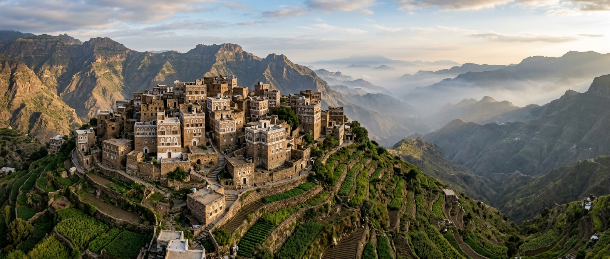
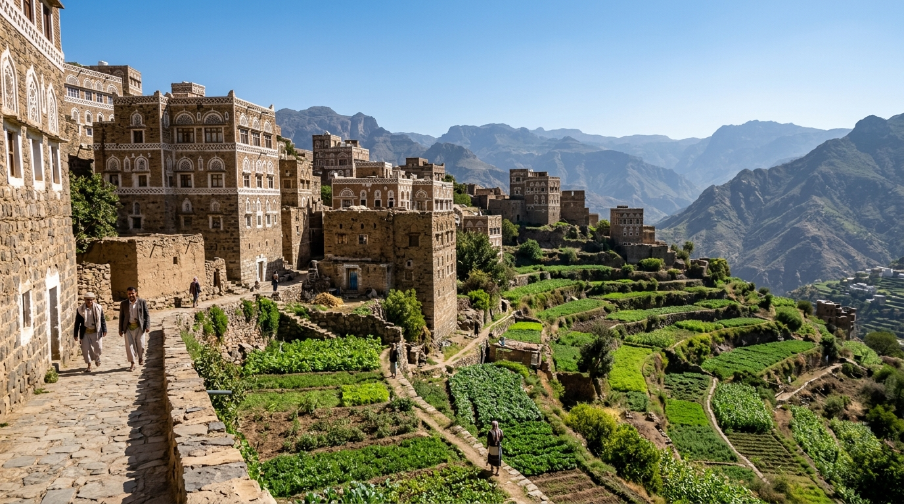
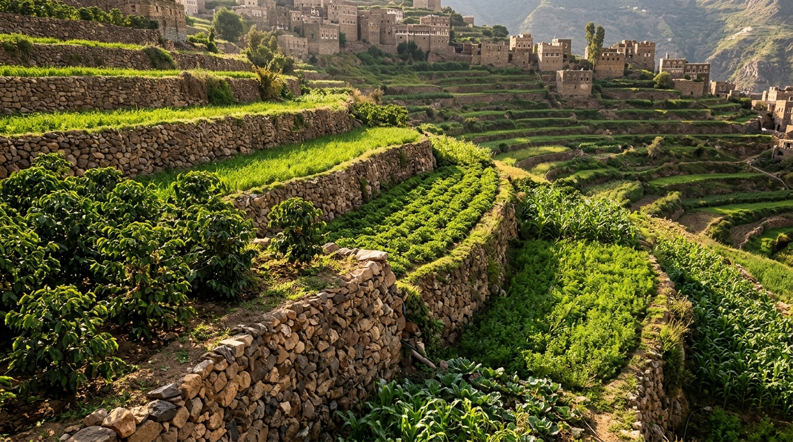
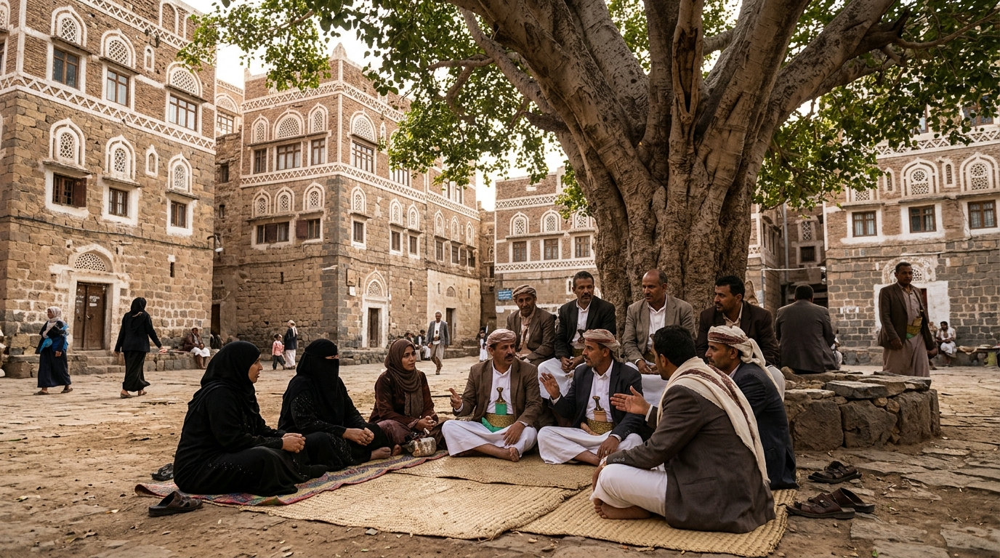
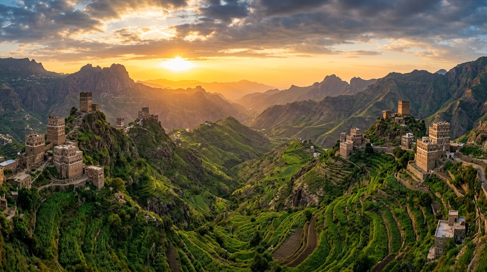
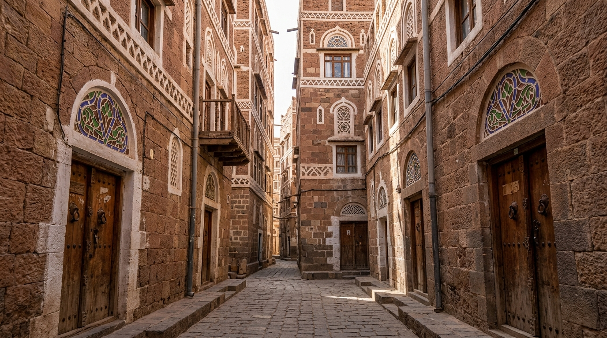
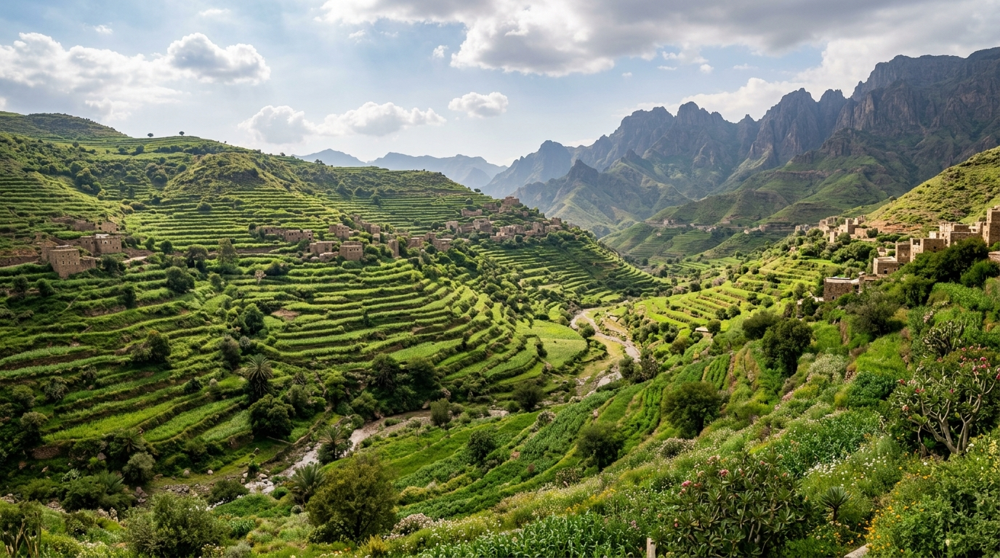

01
الجذور والبدايات
ارتبطت حياة سكان القرية منذ البدايات بالأرض والموارد الطبيعية والعمل المشترك، وشكلت الحياة الريفية أساسًا مهمًا في نشأة المجتمع.

قرية تجمع بين جمال الطبيعة وروح المجتمع، وتحمل تاريخًا وهويةً راسخة في ذاكرة أبنائها.

قرية المشاوز هي مجتمع ريفي يتميز بروابط اجتماعية قوية وروح التعاون بين أبنائه. ويشكل الانتماء إلى القرية والأرض جزءًا أساسيًا من هوية سكانها.
تتميز القرية بطبيعتها الريفية وحياتها المجتمعية التي تقوم على التعاون والتكافل والمشاركة، إلى جانب ارتباط السكان بالأرض والأنشطة الزراعية.
ويسعى أبناء القرية إلى تطوير مجتمعهم من خلال المبادرات والمشاريع التي تساهم في تحسين مستوى الحياة ودعم التنمية المستدامة.
تقع قرية المشاوز في محافظة تعز في الجمهورية اليمنية، وتتميز بطبيعتها الريفية وارتباط سكانها بالأرض والمجتمع المحلي.
ويشكل الموقع والبيئة المحيطة بالقرية جزءًا مهمًا من حياة السكان، وخاصة في المجالات الزراعية والاجتماعية.
يمكن إضافة خريطة Google Maps هنا بعد تحديد الموقع الجغرافي الدقيق للقرية.
تاريخ المشاوز هو قصة مجتمع حافظ على قيمه وروابطه عبر الأجيال.
ارتبطت حياة سكان القرية منذ البدايات بالأرض والموارد الطبيعية والعمل المشترك، وشكلت الحياة الريفية أساسًا مهمًا في نشأة المجتمع.
حافظ أبناء القرية على قيم التعاون والتكافل ومساعدة الآخرين، وأصبحت هذه القيم جزءًا أساسيًا من الحياة الاجتماعية.
تطورت احتياجات المجتمع مع مرور الوقت، مما شجع أبناء القرية على تنظيم جهودهم وتنفيذ المبادرات التي تخدم المجتمع.
تواصل القرية مسيرتها نحو مستقبل أفضل من خلال تعزيز العمل الجماعي ودعم المشاريع التنموية والتكافلية.
تمثل الزراعة جانبًا مهمًا من الحياة الريفية ومصدرًا مهمًا للإنتاج والاستقرار في المجتمع المحلي.
يقوم المجتمع على التعاون ومساعدة الآخرين والمشاركة في المبادرات التي تخدم أبناء القرية.
تحافظ القرية على موروثها الاجتماعي والثقافي من خلال العادات والتقاليد والروابط المجتمعية.
مجموعة من الصور التي تعكس طبيعة القرية وحياة المجتمع المحلي.






يعتمد مستقبل قرية المشاوز على قدرة أبنائها على العمل معًا واستثمار مواردها وتعزيز المبادرات التي تحقق أثرًا حقيقيًا ومستدامًا.
ومن خلال التكافل والتنمية والعمل المجتمعي، يمكن تحويل التحديات إلى فرص وبناء مستقبل أفضل للأجيال القادمة.
اكتشف مشاريعنا